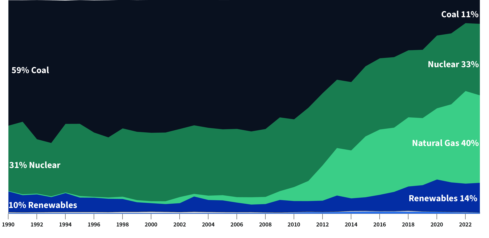
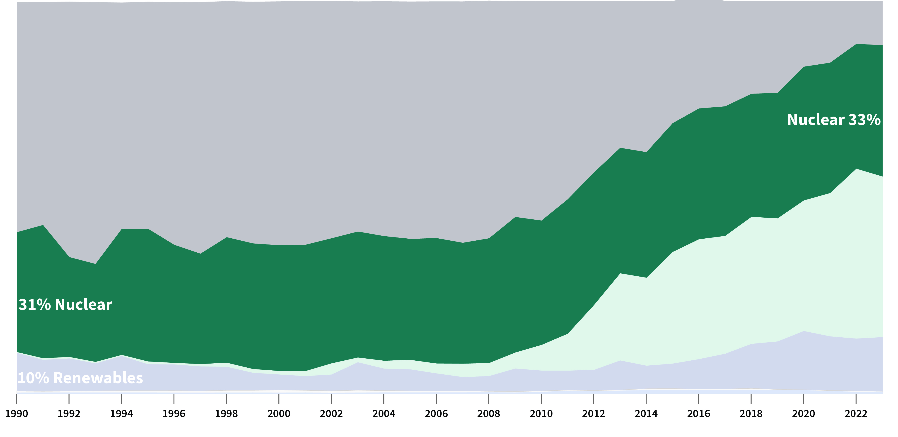

North Carolina has a diverse portfolio of energy with substantial renewable energy resources. Its solar resources help make the state a leader in solar power. Strong offshore winds along the state's Atlantic coast could provide energy for electricity generation. The nearly 19 million acres of woodlands that cover about three-fifths of the state provide a large biomass resource and employment for about 74,000 people who work in North Carolina's forestry and forest products industries. Rivers that flow through the state provide hydroelectric power to many communities. North Carolina has few fossil fuel reserves and does not have any oil, natural gas, or coal production. In addition to its natural resources, North Carolina is one of the nation's leading nuclear power-producing states.
Natural gas and nuclear power provides about three-fourths of North Carolina's total net generation.
Over the past decade, the contribution of natural gas-fired generation in the state has increased as electric utilities have added natural gas-fired power plants. In 2023, the amount of North Carolina's electricity generated from natural gas accounted for 41% of the state's total generation. North Carolina is the nation's fifth-largest producer of electricity from nuclear power.

Nuclear remains a constant resource for power in North Carolina as it continues to provides between 30 to 35% of the state's total generation. In 2023, nuclear energy was the state's second-largest fuel source for electricity and provided 33% of the state's net generation. The three largest power plants in North Carolina by generation were nuclear.

Coal’s share has dwindled and Natural gas share has risen in the state electricity mix.
Natural gas-fired generation exceeded coal-fired generation for the first time in 2016. Before 2012, coal-fired power plants provided more than half of the electricity generated in North Carolina. Since 2012, 31 coal-fired units with about 4,000 megawatts of generating capacity have retired and 30 natural gas-fired units with about 5,400 megawatts of capacity were added. In 2023, the remaining coal-fired power plants provided 11% of the electricity generated in the state.
North Carolina has substantial renewable energy resources.
In 2023, renewable sources produced about 15% of the total electricity generated in North Carolina, with the sum of utility-scale (1 megawatt or larger) and small-scale (less than 1 megawatt) solar facilities providing the largest share, at about two-thirds of all renewables. The amount of electricity generated from solar energy increased rapidly in recent years. In 2017, solar energy became the largest source of the state's renewable electricity generation, surpassing conventional hydroelectric power for the first time. In 2023, solar power provided about 10% of the state's total generation.At the end of 2023, North Carolina ranked fourth in the nation in solar generating capacity, with nearly 6,600 megawatts, and fifth in total solar power generation.
Takeaways
In 2007, North Carolina became the first state in the Southeast to adopt a renewable portfolio standard, which required investor-owned electric utilities in the state to have 12.5% of their electricity retail sales come from renewable energy sources by 2021. That requirement was met. Rural electric cooperatives and municipal electric suppliers also met their target of obtaining 10% of their electricity sales from renewable sources by 2018. Additionally, the standard set statewide targets for increasing electricity generation from burning methane derived from swine and poultry waste for all power providers.
North Carolina's governor signed clean energy legislation into law in October 2021 that will close some of the state's coal-fired power plants by 2030 and replace them with new generation from renewable sources. Under the law, the state's carbon emissions from electric generating facilities will be reduced 70% by 2030 and reach carbon neutrality by 2050.